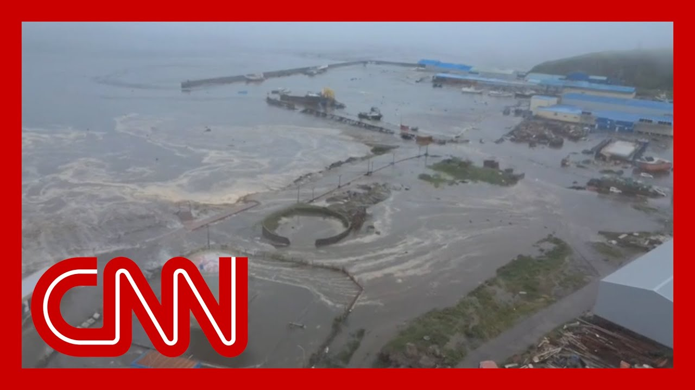

|
2025-07-31 |
31:40 |
📄在线文稿
📁离线文稿
📚PDF
|
1096 |
811 |
268 |
672 |
27 |
41 |
143 |
124 |
214 |
132 |
|

|
2025-07-31 |
4:16 |
📄在线文稿
📁离线文稿
📚PDF
|
239 |
152 |
38 |
100 |
6 |
7 |
26 |
18 |
32 |
18 |
|
|
2025-07-31 |
16:31 |
📄在线文稿
📁离线文稿
📚PDF
|
556 |
376 |
97 |
230 |
6 |
15 |
51 |
41 |
66 |
51 |

|
2025-07-31 |
26:01 |
📄在线文稿
📁离线文稿
📚PDF
|
895 |
672 |
219 |
517 |
19 |
27 |
120 |
91 |
144 |
101 |
|
|
2025-07-31 |
21:00 |
📄在线文稿
📁离线文稿
📚PDF
|
839 |
632 |
184 |
445 |
14 |
22 |
107 |
73 |
146 |
84 |

|
2025-07-31 |
26:01 |
📄在线文稿
📁离线文稿
📚PDF
|
945 |
749 |
239 |
590 |
25 |
32 |
134 |
113 |
178 |
114 |

|
2025-07-31 |
25:56 |
📄在线文稿
📁离线文稿
📚PDF
|
958 |
715 |
220 |
534 |
27 |
32 |
122 |
90 |
156 |
106 |

|
2025-07-31 |
10:00 |
📄在线文稿
📁离线文稿
📚PDF
|
522 |
373 |
128 |
268 |
5 |
21 |
73 |
40 |
54 |
58 |